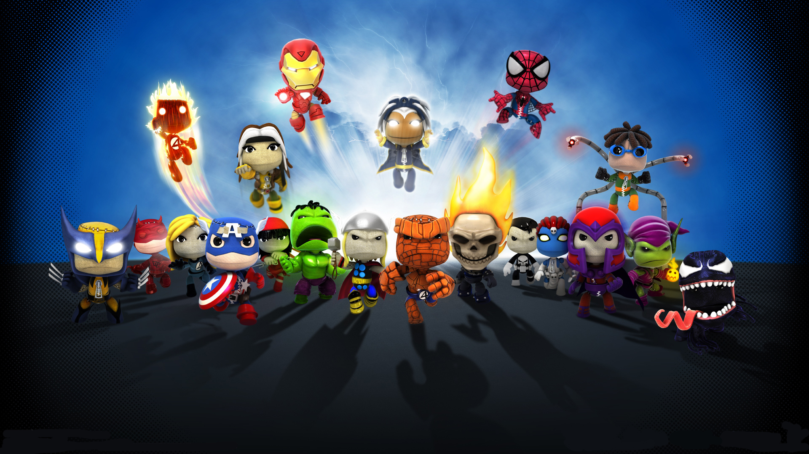
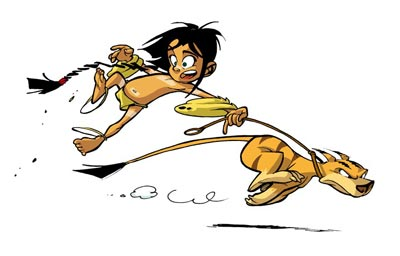
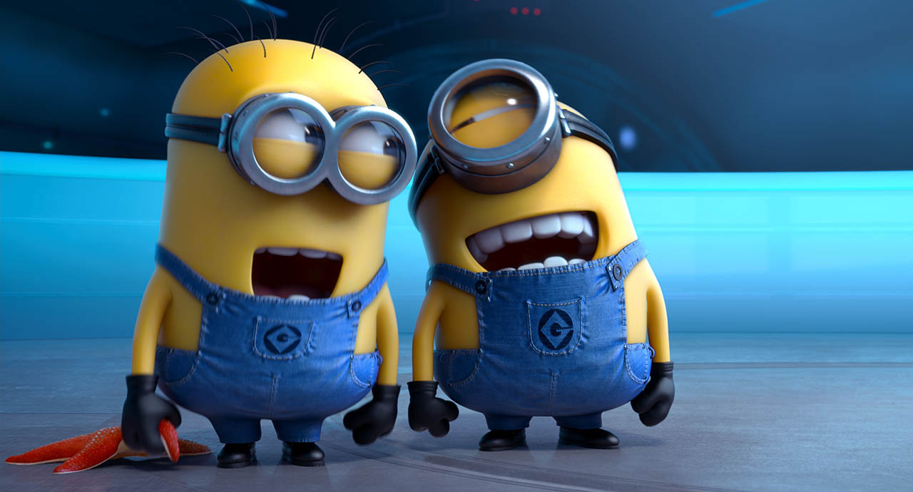
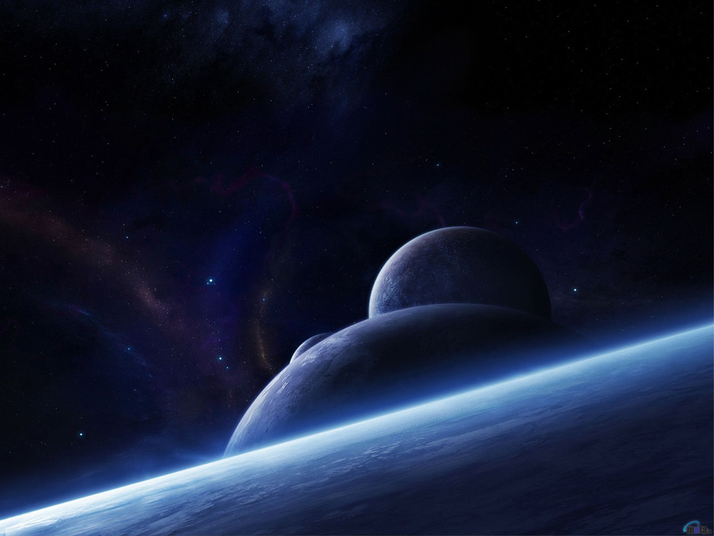
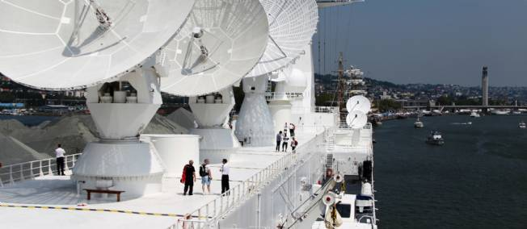

Quiz de Noël
24 Décembre 2013
Qui veux jouer ?

Alors à l'attaque !
Question 1
Comment se dépace le Père Noël ?
- En voiture
- En chameau
- En traineau
Question 2
Qui suis-je ?
- Wall-e
- wallee
- Wall-i
Question 3
Combien de jours possède le calendrier de l'avent ?
- 24 jours
- 25 jours
- 31 jours
Question 4
Comment s'appelle l'inventeur de ces héros ?
Comment s'appelle l'inventeur de ces héros ?
- Little Big Planet
- Marvel
- DC Comic
Question 5
Quel est le sandwich le plus vendu de McDonald's ?
Quel est le sandwich le plus vendu de McDonald's ?
- Le CheeseBurger
- Le Royal Cheese
- Le Big Mac
Question 6
Dans la série Navis
Quelle est la nature de son ami Bobo ?
- Constructeur
- Voyageur
- Migreur
Moka, pas lé to ma laki, bokji ?
Question 7
Pourquoi ces deux Minions rigolent-ils ?
Le directeur de l'agence AVL s'appelle :
- De la Fesse Dure
- De la fesse Molle
- De la Molle Fesse
Question 8
Quelle est la forme de la grande ours
Quelle est la forme de la grande ours
- Une casserole
- Un ours
- Une poêle
Question 9
Quelle est la température du zéro absolu ?
Quelle est la température du zéro absolu ?
- - 213,15 °C
- - 273,15 °C
- - 293,15 °C
Question 10
Où trouve-t-on ce phénomène ?

Où voit-on les aurores boréales ?
- Au pôle nord
- A l'équateur
- Au pôle sud
Question 11
Comment s'appelle ce navire ?
Quel est le nom de ce navire capable, de suivre une pièce de 2€, avec précision, en orbitre terrestre ?
- Le Pong
- Le Miage
- Le Monge
Question 12
Comment s'appelle ce héros ?
Comment s'appelle ce héros ?
- Minion Vador
- Palpatine
- Dark Vador
Question 13
Comment s'appelle ce héros ?
Comment s'appelle ce héros ?
- Buzz l'éclair
- Dave
- Woody
Fin des questions
Réponses
Question 1
Le père Noël se déplace en traineau tiré par ses rennes
Question 2
Wll-e est un petit robot chargé de compacter les déchêts laissé par l'humanité sur Terre qui a développé une personnalité.
Question 3
Le calendrier de l'Avent est une tradition d'origine germanique destinée à faire patienter les enfants jusqu'à Noël. Il est compte 24 jours.
Question 4
Tous ces héros appartiennent au monde des Marvel, bien qu'ils soient utilisés dans le jeu Little Big Planet.
Question 5
Le Big Mac représente plus de 60 % des produits vendus chez McDonald.
Question 6
Bobo fait partie des migreurs envoyés par Sillage, pour terraformer la planète de Navis.
Son nom lui vient de sa première rencontre avec Navis, qui lui a donné ce nom pour le diférencier des autres migreurs.
question 7
Les deux minions rigolent après la présentation du directeur de l'agence AVL : Filasse de la Molle Fesse. Un rien les fait rire : fesse ^^
Question 8
La grande ours est en forme de casserole. Elle est constituée de 7 étoiles.
Question 9
Le zéro absolu est le zéro de référence en physique-chimie. Il est de - 273,15 °C ou de 0 °K (Kelvin).
Question 10
Les aurores sont un phénomènes visibles aux pôles. Les boréales : au pôles Sud. Les astrales : au pôle Nord.
Question 11
Le Monge est le fleuron de la flotte française.
Il est capable de suivre la trajectoire au centimètre près, d'une pièce de 2€ en orbitre.
Il est utilisé pour suivre la trajectoire de missiles.
Le navire est peint dans un blanc élégant, mais c'est d'abord pour limiter au maximum la déformation de ses superstructures
par dilatation différentielle sous l'effet de l'éclairement solaire, qui fausserait le parallélisme d'alignement très précis de ses capteurs.
Question 12
Non, ce n'est pas Palpatine mais bien Dark Vador.
Même si ce Minion est en fait Minion Dark.
Question 13
Dave adore son costume de Buzz l'Eclair>/code> pour les soirées.